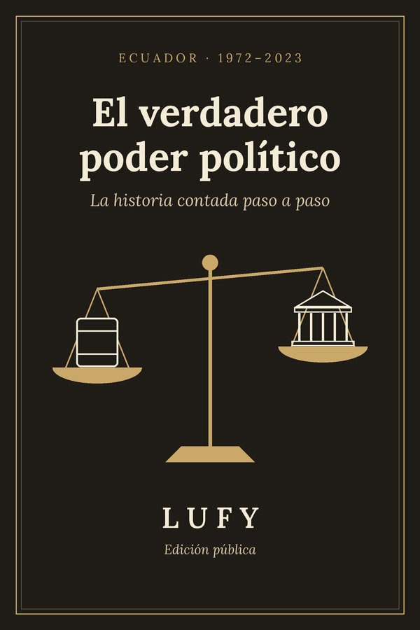

Lufy: historia y datos públicos del Ecuador, con fuente
Contamos cómo se han cruzado el poder económico y el poder político del Ecuador, y publicamos datos oficiales que cualquiera puede verificar. Sin acusaciones, sin datos personales y con un enlace a la fuente en cada cifra.
Nuestro libro: «El verdadero poder político. Ecuador 1972–2023». Medio siglo contado paso a paso, del primer barril de petróleo al final del gobierno de 2021–2023.

El libro
Catorce capítulos, de 1972 a 2023: el boom petrolero, la deuda, la sucretización, el feriado bancario de 1999, la dolarización y las décadas de expedientes judiciales que vinieron después. Se lee como una historia, pero nada es inventado: cada hecho lleva su fuente, y toda persona sin sentencia firme se presume inocente.
PDF de 165 páginas. Paga lo que quieras (sugerido: 3 USD), o descárgalo gratis.
Último artículo de datos
¿Cuánto declararon las organizaciones políticas en la campaña 2025? Los datos del CNE
En la 1.ª vuelta presidencial, las 12 organizaciones con reportes completos declararon $596.455,65 de ingresos y $534.609,69 de gasto. El límite legal por binomio era de $5.494.525,60.
Qué es Lufy
Lufy nació como un archivo de investigación sobre poder y registros públicos del Ecuador. De ese archivo salió el libro, y de ese mismo método salen los artículos de datos. Lee nuestra historia.
- Solo datos confirmados de fuentes oficiales, con enlace y fecha de corte.
- No acusamos a nadie. No señalamos personas y respetamos la presunción de inocencia.
- No publicamos datos personales: trabajamos con cifras agregadas.
- Corregimos en público cuando nos equivocamos.
Apoya a Lufy
Lufy es independiente y todo lo que publicamos en esta web es gratis. Si quieres que sigamos revisando documentos oficiales, puedes apoyarnos en Ko-fi o comprar el libro.